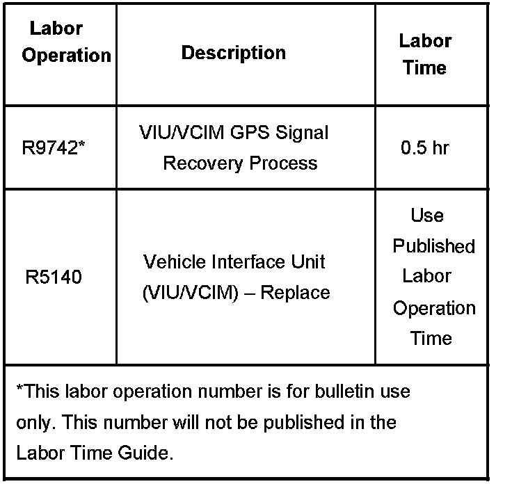
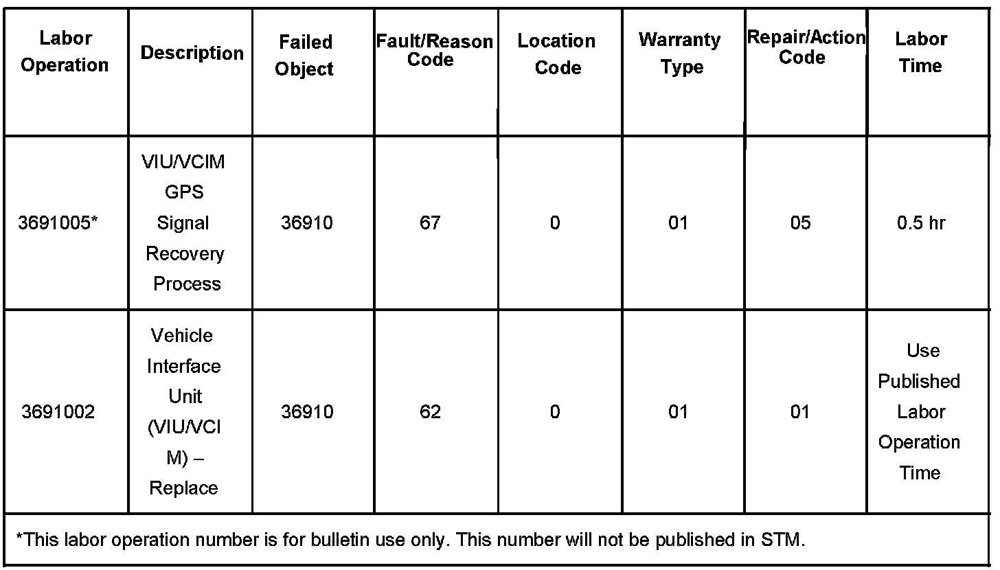

OnStar(R) - Loss of GPS Signal/Hands Free Issues
Bulletin No.: 02-08-46-007CDate: November 19, 2007
INFORMATION
Subject:
Information on OnStar(R) System - Possible Loss of GPS Signal, Hands-Free Calling Minutes Expire Prematurely and/or Inability to Add Hands-Free Calling Minutes
Models:
2001-2008 GM Passenger Cars and Light Duty Trucks (Including Saturn)
2003-2008 HUMMER H2
2006-2008 HUMMER H3
2005-2008 Saab 9-7X
with OnStar(R) System (RPO UE1)
Supercede:
This bulletin is being revised to add the 2008 model year, warranty information and to provide GPS signal recovery steps (under Dealer Action heading) to do PRIOR to determining if the VIU/VCIM needs replacement. Please discard Corporate Bulletin Number 02-08-46-007B (Section 08 - Body & Accessories).
If the vehicle currently has analog-upgradable OnStar(R) hardware, then the customer should be made aware of the digital upgrade program per the latest version of Service Bulletin # 05-08-46-006. Any analog OnStar system that is not upgraded prior to the end of 2007 will be deactivated due to the upcoming phase-out of the analog cellular network in the U.S. and Canada. If the vehicle has recently been upgraded or has had a service replacement unit installed, this bulletin may not be applicable.
Certain 2001-2008 model year vehicles equipped with OnStar(R) may exhibit a condition with the Global Positioning System (GPS) that causes inaccuracies in the GPS clock. The GPS system is internal to the OnStar(R) Vehicle Interface Unit (VIU) or the Vehicle Communication Interface Module (VCIM). This inaccuracy can result in a symptom where the OnStar(R) Call Center is unable to obtain an accurate GPS signal, hands-Free Calling minutes expire prematurely and/or the inability to add Hands-Free calling minutes.
Customer Notification
OnStar(R) will notify the customer by mail with instructions to contact their dealership service department.
Dealer Action
Not all vehicles will require VIU/VCIM replacement.
The GPS signal in some vehicles may be recoverable. To determine if the signal is recoverable, simply connect the Tech2(R) and using the GPS information data display option, observe the GPS date and time. If the date/time stamps are equal to a date approximately 19 years in the future, the GPS clock has exceeded its capacity and the VIU/VCIM will need to be replaced. If the date/time stamp is in the past or near future, the GPS clock has simply generated an inaccurate value and may be recoverable by performing the following power-up reset.
To initiate a power-up reset, battery voltage (batt. +) must be removed from the VIU/VCIM. The preferred methods, in order, of initiating the reset are outlined below.
Remove the fuse that supplies Battery positive (Batt. +) voltage to the module (refer to the applicable Service Information schematics for the appropriate fuse).
The next preferred method is to remove the connector to the OnStar(R) unit that Batt + is contained.
The least preferable method is to remove the negative terminal of the vehicle battery. This will not only initiate the power-up reset, but it may also result in the loss of radio presets and other stored personalization information/settings in other modules as well.
After initiating the power-up reset, the GPS data will be set to the defaulted date and time and will require an acquisition of the GPS signal in order to gain the proper date and time.
Acquiring the GPS signal requires running the vehicle in an open/unobstructed view of the sky. First, contact OnStar(R) Technical Support by pressing the blue button. Allow the OnStar(R) Technical Advisor to activate the GPS recovery process. This should take approximately 10 minutes. Continue to monitor the Tech2(R) for the current time and date. REMINDER - Keep in mind that the time displayed on the Tech2(R) is in Greenwich Mean Time (GMT) and the offset is based on the time zones relationship to GMT.
If replacement of the VIU/VCIM is necessary, you MUST reconfigure the OnStar� system. Failure to reconfigure the system will result in an additional customer visit for repair. OnStar� VIU, Generations 2 and 3, will require the technician to press the blue OnStar� button to reconfigure the vehicle with an OnStar� advisor.
OnStar(R) VCIM, Generations 4-7 will require the technician to reconfigure the vehicle with the use of the TIS2WEB and SPS applications (pass thru only), along with the Tech2(R).
The configuration and set-up procedure is a two-step process that must be completed step-by-step without interruption or delay in between each step. This procedure enables an automated activation without a button press by the technician to the OnStar(R) Call Center. Following this procedure, it may take up to 24 hours for all OnStar(R) services to be fully activated.
How to Order Parts
If the OnStar(R) GPS date/time stamp is non-recoverable and the unit needs to be replaced, dealers in the U.S. should contact Autocraft Electronics select the catalog item that contains this bulletin number. Canadian dealers should contact MASS Electronics.
Dealers DO NOT need to call the GM Technical Assistance Center (TAC) for replacement approval. Autocraft Electronics and MASS Electronics will be responsible for verifying that the subject vehicle is a candidate for a replacement VIU/VCIM.
Warranty Information (excluding Saab U.S. Models)

For vehicles repaired under warranty, use the table.
Warranty Information (Saab U.S. Models)

For vehicles repaired under warranty, use the table.

Disclaimer